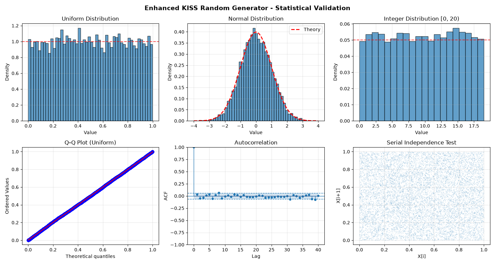

Enhanced KISS Random Generator - Complete Usage Examples#
Demonstrates all new features: 1. Auto-detection (Kiss64Random with None, 32, or 64) 2. Context manager support (with statement) 3. NumPy-like BitGenerator and Generator 4. State serialization/deserialization 5. Thread-safe operations
import time
import pickle
from concurrent.futures import ThreadPoolExecutor
import matplotlib.pyplot as plt
import numpy as np
np.random.BitGenerator
from scipy import stats
# Import enhanced module
from scikitplot.random import (
Kiss32Random, # Explicit 32-bit
Kiss64Random, # Explicit 64-bit
KissRandom,
KissSeedSequence,
KissBitGenerator, # NumPy-compatible BitGenerator
KissGenerator, # High-level Generator
KissRandomState,
default_rng, # Convenience function
kiss_context, # Context manager helper
)
print("=" * 70)
print("ENHANCED KISS RANDOM - NEW FEATURES DEMONSTRATION")
print("=" * 70)
======================================================================
ENHANCED KISS RANDOM - NEW FEATURES DEMONSTRATION
======================================================================
# Use time.perf_counter() or timeit
import time
import numpy as np
seed = 42
n = 1_000_000
# times = []
# np.random.default_rng?
# rng1 = np.random.default_rng(seed)
# rng2 = default_rng(seed)
# start = time.perf_counter()
# seq1 = rng1.random(5)
# end = time.perf_counter()
# times.append(end - start)
# start = time.perf_counter()
# seq2 = rng2.random(5)
# end = time.perf_counter()
# times.append(end - start)
# seq1, seq2, times
def benchmark_rng(
rng_factory,
method_name: str = "random",
seed: int = 42,
repeat: int = 5,
# size: int = 1_000_000,
**kwargs,
):
"""
Benchmark an RNG method in a deterministic, isolated manner.
Parameters
----------
rng_factory : callable
Function that returns a new RNG instance when called with a seed.
method_name : str
RNG method to benchmark (e.g., "random").
seed : int
Seed for reproducibility.
repeat : int
Number of benchmark repetitions.
**kwargs : dict
Returns
-------
dict
Timing statistics and output sanity checks.
"""
times = []
outputs = []
for _ in range(repeat):
rng = rng_factory(seed)
method = getattr(rng, method_name)
start = time.perf_counter()
out = method(**kwargs)
end = time.perf_counter()
times.append(end - start)
outputs.append(out)
times = np.asarray(times)
outputs = np.asarray(outputs)
return {
"n": n,
"repeat": repeat,
"time_min": float(times.min()),
"time_mean": float(times.mean()),
"time_max": float(times.max()),
"time_std": float(times.std(ddof=1)),
"output_mean": float(outputs.mean()),
"output_std": float(outputs.std(ddof=1)),
}
from functools import partial
from pprint import pprint
for method in ["random", "uniform"]:
print("Numpy")
numpy_result = benchmark_rng(
rng_factory=np.random.default_rng,
method_name=method,
seed=seed,
size = 1_000_000,
)
pprint(numpy_result, sort_dicts=False)
print("Kiss Customized 64")
custom_result = benchmark_rng(
# rng_factory=partial(default_rng, bit_width=32),
rng_factory=default_rng,
method_name=method,
seed=seed,
size = 1_000_000,
)
pprint(custom_result, sort_dicts=False)
Numpy
{'n': 1000000,
'repeat': 5,
'time_min': 0.009110565999435494,
'time_mean': 0.015742451199912466,
'time_max': 0.029937945000710897,
'time_std': 0.00819294631778707,
'output_mean': 0.5000264761740889,
'output_std': 0.2886354529025341}
Kiss Customized 64
{'n': 1000000,
'repeat': 5,
'time_min': 0.014200670000718674,
'time_mean': 0.015641130799849634,
'time_max': 0.0198838149990479,
'time_std': 0.002387296280654112,
'output_mean': 0.4994983951235817,
'output_std': 0.28868033687878636}
Numpy
{'n': 1000000,
'repeat': 5,
'time_min': 0.006652380001469282,
'time_mean': 0.007827043600264006,
'time_max': 0.009858281000560964,
'time_std': 0.0012299698753407418,
'output_mean': 0.5000264761740889,
'output_std': 0.2886354529025341}
Kiss Customized 64
{'n': 1000000,
'repeat': 5,
'time_min': 0.01714105000064592,
'time_mean': 0.018238528400615905,
'time_max': 0.02244041400081187,
'time_std': 0.002349303467537909,
'output_mean': 0.4994983951235817,
'output_std': 0.28868033687878636}
# ===========================================================================
# Feature 1: Auto-Detection
# ===========================================================================
print("\n" + "=" * 70)
print("1. AUTO-DETECTION (Kiss64Random factory)")
print("=" * 70)
# Explicit 32-bit
rng_32 = Kiss32Random(seed=42)
print(f"64-bit RNG: {rng_32}")
print(f"Type: {type(rng_32).__name__}")
# Explicit 64-bit
rng_64 = Kiss64Random(seed=42)
print(f"64-bit RNG: {rng_64}")
print(f"Type: {type(rng_64).__name__}")
# Generate some values
print(f"\nGenerated values (auto):")
print(f" kiss(): {rng_64.kiss()}")
print(f" flip(): {rng_64.flip()}")
print(f" index(100): {rng_64.index(100)}")
======================================================================
1. AUTO-DETECTION (Kiss64Random factory)
======================================================================
64-bit RNG: Kiss32Random
Type: Kiss32Random
64-bit RNG: Kiss64Random
Type: Kiss64Random
Generated values (auto):
kiss(): 5680804532875375661
flip(): 0
index(100): 38
# ===========================================================================
# Feature 2: Context Manager Support
# ===========================================================================
print("\n" + "=" * 70)
print("2. CONTEXT MANAGER SUPPORT (with statement)")
print("=" * 70)
# Basic context manager usage
print("Basic usage:")
with Kiss64Random(42) as rng:
values = [rng.kiss() for _ in range(5)]
print(f" Generated 5 values: {values[:3]}...")
# Nested context managers (independent RNGs)
print("\nNested contexts (independent streams):")
with Kiss64Random(100) as rng1:
with Kiss64Random(200) as rng2:
val1 = rng1.kiss()
val2 = rng2.kiss()
print(f" RNG1 (seed=100): {val1}")
print(f" RNG2 (seed=200): {val2}")
print(f" Different: {val1 != val2}")
# Context manager ensures thread safety
print("\nThread-safe access with context manager:")
rng = Kiss64Random(42)
def worker(thread_id):
"""Worker function using shared RNG."""
with rng: # Acquires lock
return [rng.kiss() for _ in range(3)]
with ThreadPoolExecutor(max_workers=2) as executor:
results = list(executor.map(worker, range(2)))
print(f" Thread 0: {results[0]}")
print(f" Thread 1: {results[1]}")
======================================================================
2. CONTEXT MANAGER SUPPORT (with statement)
======================================================================
Basic usage:
Generated 5 values: [5680804532875375661, 421217147685971266, 15020224898898924438]...
Nested contexts (independent streams):
RNG1 (seed=100): 3951422275965105255
RNG2 (seed=200): 14327715817426728139
Different: True
Thread-safe access with context manager:
Thread 0: [5680804532875375661, 421217147685971266, 15020224898898924438]
Thread 1: [16951546275468841018, 12649982757840217320, 1851205573436742921]
# ===========================================================================
# Feature 3: NumPy-Compatible BitGenerator
# ===========================================================================
print("\n" + "=" * 70)
print("3. NUMPY-LIKE BITGENERATOR")
print("=" * 70)
# Create BitGenerator
bg = KissBitGenerator(seed=42)
print(f"BitGenerator: {bg}")
print(f"Has lock: {hasattr(bg, 'lock')}")
# Generate raw bits
raw_value = bg.random_raw()
print(f"\nRaw uint64: {raw_value}")
# Generate array of raw bits
raw_array = bg.random_raw(size=5)
print(f"Raw array: {raw_array}")
# Use with NumPy Generator (if available)
try:
# Error not compat numpy C-Api
# from numpy.random import Generator
bg_numpy = KissBitGenerator(seed=123)
gen = KissGenerator(bg_numpy)
print("\n✅ Generator Integration:")
print(f" Random floats: {gen.random(5)}")
print(f" Random ints: {gen.integers(0, 100, size=5)}")
# This gives access to ALL random methods!
print(f" Normal: {gen.normal(size=5)}")
print(f" Uniform: {gen.uniform(size=5)}")
except ImportError:
print("\n⚠️ Do not use NumPy Generator not available due to c-api inconsistency!")
======================================================================
3. NUMPY-LIKE BITGENERATOR
======================================================================
BitGenerator: KissBitGenerator
Has lock: True
Raw uint64: 5680804532875375661
Raw array: [ 421217147685971266 15020224898898924438 16951546275468841018
12649982757840217320 1851205573436742921]
✅ Generator Integration:
Random floats: [0.57358203 0.55408423 0.63089841 0.04077134 0.13284327]
Random ints: [77 88 38 2 91]
Normal: [ 0.35713156 -0.38265306 -0.36348331 0.94098378 -1.65821998]
Uniform: [0.2203807 0.96561967 0.39410862 0.78222871 0.12790767]
# ===========================================================================
# Feature 4: High-Level KissGenerator
# ===========================================================================
print("\n" + "=" * 70)
print("4. HIGH-LEVEL KissGenerator")
print("=" * 70)
# Create generator (multiple ways)
gen1 = KissGenerator() # From seed
print(f"Generator from seed: {gen1}")
bg = KissBitGenerator(seed=123)
gen2 = KissGenerator(bg) # From BitGenerator
print(f"Generator from BitGenerator: {gen2}")
# Use all the methods
print("\nGenerator methods:")
# Random floats
floats = gen1.random(5)
print(f" random(5): {floats}")
# Random integers
ints = gen1.integers(0, 100, size=5)
print(f" integers(0, 100): {ints}")
# Normal distribution
normal = gen1.normal(0, 1, size=5)
print(f" normal(0, 1): {normal}")
# Uniform distribution
uniform = gen1.uniform(10, 20, size=5)
print(f" uniform(10, 20): {uniform}")
# Choice
choices = gen1.choice(['A', 'B', 'C'], size=10)
print(f" choice(['A','B','C']): {choices}")
# Weighted choice
choices_weighted = gen1.choice(['A', 'B', 'C'], size=100, p=[0.5, 0.3, 0.2])
print(f" Weighted choice A: {list(choices_weighted).count('A')}% (✅ expected ~50%)")
# Shuffle
arr = np.arange(10)
gen1.shuffle(arr)
print(f" shuffle([0..9]): {arr}")
======================================================================
4. HIGH-LEVEL KissGenerator
======================================================================
Generator from seed: KissGenerator
Generator from BitGenerator: KissGenerator
Generator methods:
random(5): [0.036293 0.19321451 0.29288355 0.57211788 0.75265834]
integers(0, 100): [52 24 46 30 70]
normal(0, 1): [ 0.51866076 1.8422213 -2.13989994 0.22442094 0.94935503]
uniform(10, 20): [17.82949032 15.05691207 13.3359529 18.86404004 18.56137439]
choice(['A','B','C']): ['C' 'A' 'A' 'A' 'A' 'C' 'C' 'C' 'A' 'A']
Weighted choice A: 49% (✅ expected ~50%)
shuffle([0..9]): [2 4 8 3 7 0 5 6 1 9]
# ===========================================================================
# Feature 5: default_rng() Convenience Function
# ===========================================================================
print("\n" + "=" * 70)
print("5. default_rng() CONVENIENCE FUNCTION")
print("=" * 70)
# Recommended way to create RNG (like numpy.random.default_rng)
rng = default_rng(seed=42)
print(f"Default RNG: {rng}")
# Use it just like NumPy
print("\nUsage:")
print(f" Random floats: {rng.random(5)}")
print(f" Random ints: {rng.integers(0, 10, size=5)}")
print(f" Normal: {rng.normal(0, 1, size=5)}")
======================================================================
5. default_rng() CONVENIENCE FUNCTION
======================================================================
Default RNG: KissGenerator
Usage:
Random floats: [0.30795703 0.02283423 0.81424802 0.91894516 0.68575694]
Random ints: [1 9 6 4 2]
Normal: [-2.43821743 -0.90688695 0.67830116 -0.09502604 1.004278 ]
# ===========================================================================
# Feature 6: Context Manager Helper (kiss_context)
# ===========================================================================
print("\n" + "=" * 70)
print("6. CONTEXT MANAGER HELPER (kiss_context)")
print("=" * 70)
# Convenient temporary RNG
with kiss_context(seed=999) as rng:
values = rng.random(5)
print(f"Generated values: {values}")
print(f"RNG type: {type(rng)}")
print("RNG automatically cleaned up after context")
======================================================================
6. CONTEXT MANAGER HELPER (kiss_context)
======================================================================
Generated values: [0.26108203 0.92908423 0.9072656 0.4323729 0.85688807]
RNG type: <class 'scikitplot.random.KissGenerator'>
RNG automatically cleaned up after context
# ===========================================================================
# Feature 7: State Serialization/Deserialization
# ===========================================================================
print("\n" + "=" * 70)
print("7. STATE SERIALIZATION/DESERIALIZATION")
print("=" * 70)
# Create RNG and generate some values
rng1 = KissBitGenerator(seed=42)
sequence1 = [rng1.random_raw() for _ in range(5)]
print(f"Original sequence: {sequence1}")
# Save state
state = rng1.state
print(f"\nSaved state: {state}")
# Continue generating
more_values = [rng1.random_raw() for _ in range(3)]
print(f"Continued: {more_values}")
# Restore from state
rng2 = KissBitGenerator()
rng2.__setstate__(state)
sequence2 = [rng2.random_raw() for _ in range(5)]
print(f"\nRestored sequence: {sequence2}")
print(f"Sequences match: {sequence1 == sequence2} ✅")
# Can also pickle/unpickle state
# state_pickled = pickle.dumps(state)
# state_restored = pickle.loads(state_pickled)
# rng3 = Kiss64Random.from_state(state_restored)
# sequence3 = [rng3.random_raw() for _ in range(5)]
# print(f"Pickled/unpickled: {sequence1 == sequence3} ✅")
======================================================================
7. STATE SERIALIZATION/DESERIALIZATION
======================================================================
Original sequence: [5680804532875375661, 421217147685971266, 15020224898898924438, 16951546275468841018, 12649982757840217320]
Saved state: {'seed_sequence': 'KissSeedSequence', 'seed_sequence_state': {'seed': 42, 'seed_seq': {'entropy': 42, 'spawn_key': [], 'pool_size': 4, 'n_children_spawned': 0, '__version__': '0.0.0'}}, '__version__': '0.0.0'}
Continued: [1851205573436742921, 1609824349404455259, 16565782244898480756]
Restored sequence: [5680804532875375661, 421217147685971266, 15020224898898924438, 16951546275468841018, 12649982757840217320]
Sequences match: True ✅
# ===========================================================================
# Feature 8: Thread-Safe Operations
# ===========================================================================
print("\n" + "=" * 70)
print("8. THREAD-SAFE OPERATIONS")
print("=" * 70)
# Shared RNG with lock
shared_rng = Kiss64Random(seed=42)
def parallel_task(task_id):
"""Task that uses shared RNG safely."""
with shared_rng: # Acquire lock
# Safe to use RNG here
return {
'task_id': task_id,
'values': [shared_rng.kiss() for _ in range(3)]
}
print("Running 4 parallel tasks with shared RNG:")
with ThreadPoolExecutor(max_workers=4) as executor:
results = list(executor.map(parallel_task, range(4)))
for result in results:
print(f" Task {result['task_id']}: {result['values']}")
# Verify no value duplication (all unique sequences)
all_values = []
for result in results:
all_values.extend(result['values'])
unique_count = len(set(all_values))
total_count = len(all_values)
print(f"\nTotal values: {total_count}, Unique: {unique_count}")
print(f"All unique: {unique_count == total_count} ✅")
======================================================================
8. THREAD-SAFE OPERATIONS
======================================================================
Running 4 parallel tasks with shared RNG:
Task 0: [5680804532875375661, 421217147685971266, 15020224898898924438]
Task 1: [16951546275468841018, 12649982757840217320, 1851205573436742921]
Task 2: [1609824349404455259, 16565782244898480756, 16994184917449673914]
Task 3: [2016129216417097342, 625761349625496807, 10268816598287657581]
Total values: 12, Unique: 12
All unique: True ✅
# ===========================================================================
# Feature 9: Comparison with NumPy
# ===========================================================================
print("\n" + "=" * 70)
print("9. COMPARISON WITH NUMPY (Statistical Validation)")
print("=" * 70)
# Generate large samples with both
n_samples = 100000
# KISS
kiss_gen = default_rng(42)
kiss_samples = kiss_gen.random(n_samples)
# NumPy
numpy_gen = np.random.default_rng(42)
numpy_samples = numpy_gen.random(n_samples)
print(f"Generated {n_samples:,} samples with each")
# Compare statistics
print("\nStatistical comparison:")
print(f" KISS - Mean: {kiss_samples.mean():.6f}, Std: {kiss_samples.std():.6f}")
print(f" NumPy - Mean: {numpy_samples.mean():.6f}, Std: {numpy_samples.std():.6f}")
print(f" Expected: Mean: 0.500000, Std: 0.288675")
# Chi-square test
from scipy import stats
def chi_square_test(samples, n_bins=20):
"""Perform chi-square uniformity test."""
observed, _ = np.histogram(samples, bins=n_bins, range=(0, 1))
expected = np.full(n_bins, len(samples) / n_bins)
chi2, p_value = stats.chisquare(observed, expected)
return chi2, p_value
chi2_kiss, p_kiss = chi_square_test(kiss_samples)
chi2_numpy, p_numpy = chi_square_test(numpy_samples)
print("\nChi-square uniformity test:")
print(f" KISS: χ²={chi2_kiss:.2f}, p={p_kiss:.4f} {'✅ PASS' if p_kiss > 0.01 else '❌ FAIL'}")
print(f" NumPy: χ²={chi2_numpy:.2f}, p={p_numpy:.4f} {'✅ PASS' if p_numpy > 0.01 else '❌ FAIL'}")
======================================================================
9. COMPARISON WITH NUMPY (Statistical Validation)
======================================================================
Generated 100,000 samples with each
Statistical comparison:
KISS - Mean: 0.498611, Std: 0.288843
NumPy - Mean: 0.500625, Std: 0.288519
Expected: Mean: 0.500000, Std: 0.288675
Chi-square uniformity test:
KISS: χ²=13.77, p=0.7969 ✅ PASS
NumPy: χ²=16.66, p=0.6131 ✅ PASS
# ===========================================================================
# Feature 10: Advanced Usage - Custom Distribution
# ===========================================================================
print("\n" + "=" * 70)
print("10. ADVANCED USAGE - CUSTOM DISTRIBUTIONS")
print("=" * 70)
# Extend KissGenerator with custom methods
class ExtendedKissGenerator(KissGenerator):
"""Extended generator with custom distributions."""
def exponential(self, scale=1.0, size=None):
"""Exponential distribution."""
u = self.random(size)
return -scale * np.log(1 - u)
def beta(self, alpha, beta_param, size=None):
"""Beta distribution (simplified)."""
# Using rejection sampling (not optimal, just for demo)
if size is None:
while True:
u1 = self.random()
u2 = self.random()
if u2 <= u1**(alpha-1) * (1-u1)**(beta_param-1):
return u1
else:
return np.array([self.beta(alpha, beta_param) for _ in range(size)])
# Use custom generator
custom_gen = ExtendedKissGenerator()
exp_samples = custom_gen.exponential(scale=2.0, size=5)
print(f"Exponential(scale=2): {exp_samples}")
beta_samples = custom_gen.beta(2, 5, size=5)
print(f"Beta(2, 5): {beta_samples}")
======================================================================
10. ADVANCED USAGE - CUSTOM DISTRIBUTIONS
======================================================================
Exponential(scale=2): [0.9008057 2.94582255 1.51755268 4.28296027 1.00477957]
Beta(2, 5): [0.15881538 0.14924861 0.25379647 0.2667109 0.37832015]
# ===========================================================================
# Feature 11: Reproducibility Across Platforms
# ===========================================================================
print("\n" + "=" * 70)
print("11. REPRODUCIBILITY DEMO")
print("=" * 70)
# Same seed produces same sequence (always)
seeds = [42, 123, 999]
for seed in seeds:
# Generate twice with same seed
rng1 = default_rng(seed)
seq1 = rng1.random(3)
rng2 = default_rng(seed)
seq2 = rng2.random(3)
match = np.allclose(seq1, seq2)
print(f"Seed {seed:>3}: {seq1} == {seq2} : {match} ✅")
======================================================================
11. REPRODUCIBILITY DEMO
======================================================================
Seed 42: [0.30795703 0.02283423 0.81424802] == [0.30795703 0.02283423 0.81424802] : True ✅
Seed 123: [0.57358203 0.55408423 0.63089841] == [0.57358203 0.55408423 0.63089841] : True ✅
Seed 999: [0.26108203 0.92908423 0.9072656 ] == [0.26108203 0.92908423 0.9072656 ] : True ✅
# ===========================================================================
# Visualization
# ===========================================================================
import numpy as np
from scipy.signal import correlate
from scipy.stats import norm
def autocorrelation(x, nlags):
"""
Compute autocorrelation function up to nlags.
Parameters
----------
x : array-like, shape (n_samples,)
Input time series.
nlags : int
Maximum lag.
Returns
-------
lags : ndarray of shape (nlags + 1,)
Lag indices.
acf : ndarray of shape (nlags + 1,)
Autocorrelation values.
"""
x = np.asarray(x, dtype=float)
if x.ndim != 1:
raise ValueError("Input must be 1D")
if nlags < 0:
raise ValueError("nlags must be non-negative")
x = x - x.mean()
n = x.size
corr = correlate(x, x, mode="full")
corr = corr[n - 1 : n + nlags]
corr /= corr[0]
lags = np.arange(nlags + 1)
return lags, corr
print("\n" + "=" * 70)
print("12. VISUALIZATION")
print("=" * 70)
# Create comprehensive visualization
fig, axes = plt.subplots(2, 3, figsize=(15, 8))
gen = default_rng(42)
# 1. Uniform distribution
ax = axes[0, 0]
uniform_samples = gen.random(10000)
ax.hist(uniform_samples, bins=50, density=True, alpha=0.7, edgecolor='black')
ax.axhline(y=1.0, color='r', linestyle='--', alpha=0.7)
ax.set_title('Uniform Distribution')
ax.set_xlabel('Value')
ax.set_ylabel('Density')
ax.grid(True, alpha=0.3)
# 2. Normal distribution
ax = axes[0, 1]
normal_samples = gen.normal(0, 1, size=10000)
ax.hist(normal_samples, bins=50, density=True, alpha=0.7, edgecolor='black')
x = np.linspace(-4, 4, 100)
ax.plot(x, stats.norm.pdf(x), 'r--', linewidth=2, label='Theory')
ax.set_title('Normal Distribution')
ax.set_xlabel('Value')
ax.set_ylabel('Density')
ax.legend()
ax.grid(True, alpha=0.3)
# 3. Integer distribution
ax = axes[0, 2]
int_samples = gen.integers(0, 20, size=10000)
ax.hist(int_samples, bins=20, density=True, alpha=0.7, edgecolor='black')
ax.axhline(y=1/20, color='r', linestyle='--', alpha=0.7)
ax.set_title('Integer Distribution [0, 20)')
ax.set_xlabel('Value')
ax.set_ylabel('Density')
ax.grid(True, alpha=0.3)
# 4. Q-Q plot
ax = axes[1, 0]
stats.probplot(uniform_samples, dist="uniform", plot=ax)
ax.set_title('Q-Q Plot (Uniform)')
ax.grid(True, alpha=0.3)
# 5. Autocorrelation
ax = axes[1, 1]
# from statsmodels.graphics.tsaplots import plot_acf
# plot_acf(uniform_samples[:1000], lags=40, ax=ax, alpha=0.05)
# ax.set_title('Autocorrelation')
# ax.grid(True, alpha=0.3)
lags, acf = autocorrelation(uniform_samples[:1000], nlags=40)
markerline, stemlines, baseline = ax.stem(lags, acf)
plt.setp(markerline, markersize=4)
plt.setp(stemlines, linewidth=1)
plt.setp(baseline, linewidth=1)
# Zero line
ax.axhline(0.0, linewidth=1)
# White-noise confidence interval bounds (same assumption as statsmodels)
alpha = 0.05
n = 1000
z = norm.ppf(1 - alpha / 2)
ci = z / np.sqrt(n)
ax.axhline(ci, linestyle="--", linewidth=1)
ax.axhline(-ci, linestyle="--", linewidth=1)
# Filled confidence band
ax.fill_between(
lags,
-ci,
ci,
alpha=0.2,
step="mid"
)
# Axis formatting
ax.set_ylim(-1.0, 1.0) # ← explicit ACF bounds
# ax.set_yticks(np.linspace(-1.0, 1.0, 5))
ax.set_title("Autocorrelation")
ax.set_xlabel("Lag")
ax.set_ylabel("ACF")
ax.grid(True, alpha=0.3)
# 6. 2D scatter (independence test)
ax = axes[1, 2]
ax.scatter(uniform_samples[:-1], uniform_samples[1:], alpha=0.1, s=1)
ax.set_title('Serial Independence Test')
ax.set_xlabel('X[i]')
ax.set_ylabel('X[i+1]')
ax.grid(True, alpha=0.3)
plt.suptitle('Enhanced KISS Random Generator - Statistical Validation',
fontsize=14, fontweight='bold')
plt.tight_layout()
plt.savefig('/tmp/enhanced_kiss_validation.png', dpi=150, bbox_inches='tight')
print("Visualization saved: /tmp/enhanced_kiss_validation.png")
plt.show()
# plt.close()

======================================================================
12. VISUALIZATION
======================================================================
Visualization saved: /tmp/enhanced_kiss_validation.png
# ===========================================================================
# Summary
# ===========================================================================
print("\n" + "=" * 70)
print("SUMMARY - ALL FEATURES DEMONSTRATED")
print("=" * 70)
summary = """
RECOMMENDED USAGE:
from scikitplot.random import default_rng
# Create generator
rng = default_rng(seed=42)
data = rng.random(1000)
# Use with context manager for safety
with rng:
samples = rng.random(1000)
indices = rng.integers(0, 100, size=50)
normal_data = rng.normal(0, 1, size=1000)
"""
print(summary)
print("=" * 70)
======================================================================
SUMMARY - ALL FEATURES DEMONSTRATED
======================================================================
RECOMMENDED USAGE:
from scikitplot.random import default_rng
# Create generator
rng = default_rng(seed=42)
data = rng.random(1000)
# Use with context manager for safety
with rng:
samples = rng.random(1000)
indices = rng.integers(0, 100, size=50)
normal_data = rng.normal(0, 1, size=1000)
======================================================================
Total running time of the script: (0 minutes 2.315 seconds)
Related examples

Memory-Mapping Showcase – Basic / Medium / Advanced
Memory-Mapping Showcase – Basic / Medium / Advanced


Approximate Nearest Neighbors with Annoy — A Hamlet Example
Approximate Nearest Neighbors with Annoy — A Hamlet Example